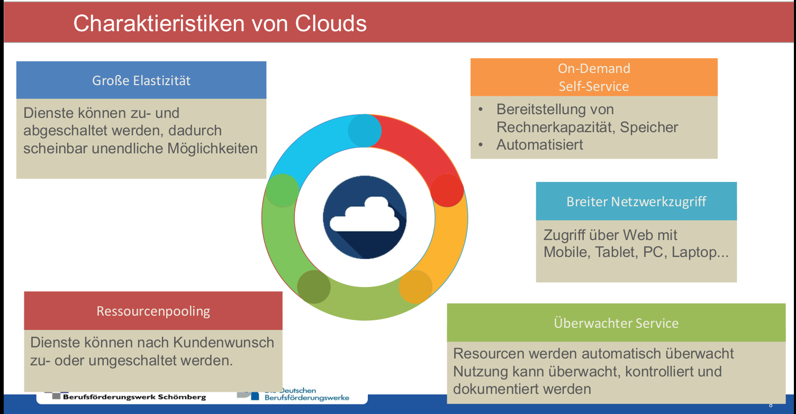
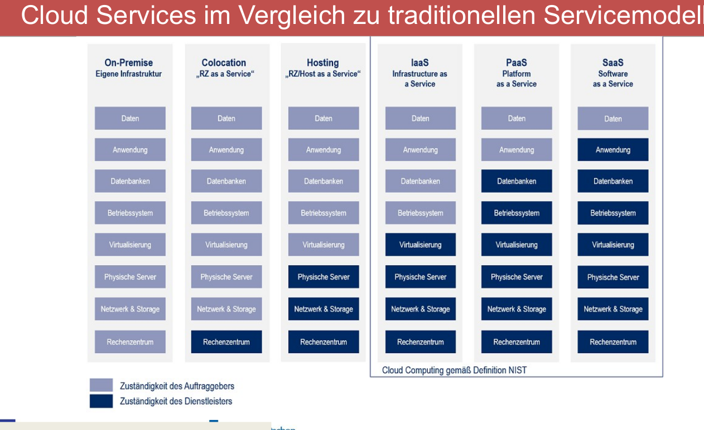
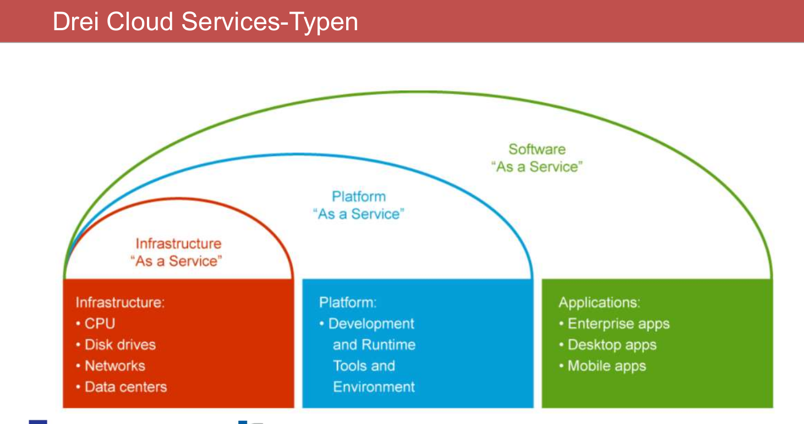
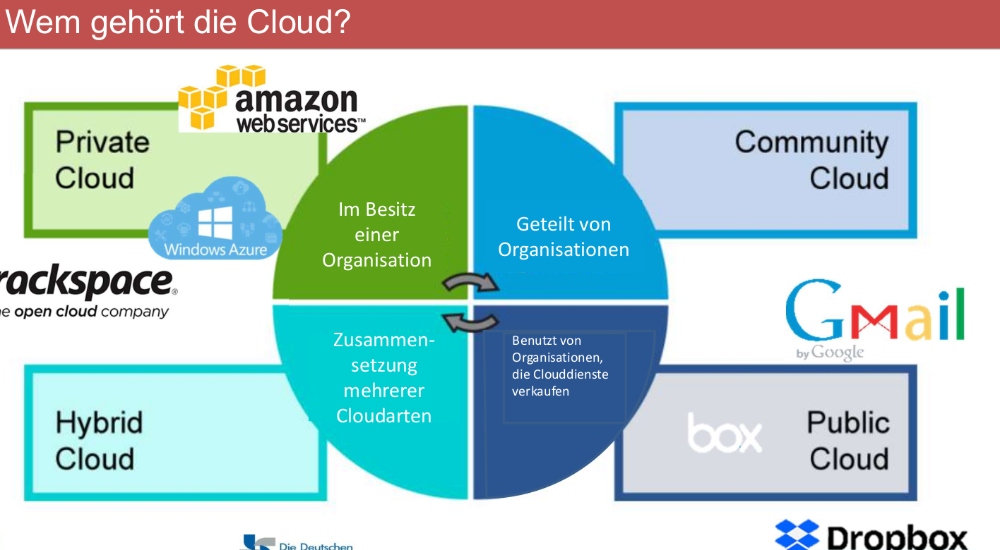
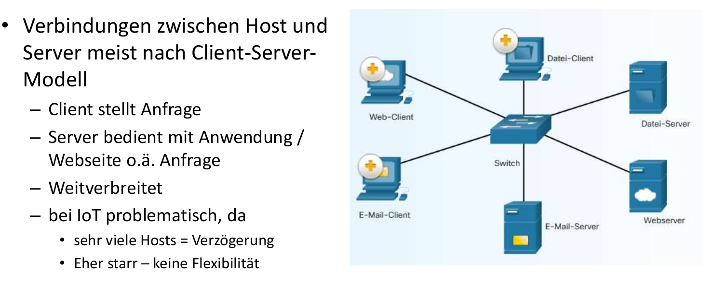

| Cloud-Sicherung | On-Premise | |
|---|---|---|
| Vorteil | günstiger | Datenschutz gewährleistet |
| Daten dezentralisiert | Expertiese bleibt im Unternehmen erhalten | |
| weniger arbeitsaufwand | kein Inet nötig | |
| Skalierbarkeit | ||
| — | —- | —— |
| Nachteil | Datenschutz schwierig | teuer |
| Expertise ausgelagert | Daten unsicher -> zentralisiert | |
| Inet nötig | mehr arbeitsaufwand | |
| nicht flexibel skalierbar |
TOP # Cloudempfehlung Eine stabile und schnell Internetverbindung, Client Software um entsprechend eBackup-Strategien zu realisieren. Eine Userauthenzifizierung zum Schutz vor unbefugten Dritten, eine Verschlüsselung bereits schon auf dem zu sichernden System. Backupprozesse definieren
TOP # Cloud-Modelle ## IaaS:Infrasturkture as a Service Netzwerk, Speicher, VoIP-Telefonie, Backupsysteme oder Server wird gestellt, alles weitere muss eigenständig eingerichtet werden
Die Plattform wird gestellt,Email-Systeme, Web-Hosting, Betriebssystem, Entwicklungsumgebung, Datenbank. Die Systeme an sich muss konfiguriert werden, Software aufgespielt
Software on Demand, Onlinespiele, Office-Anwendung, 365. Software wird gestellt und kann meist auch remote und online genutzt werden
TOP # Cloud Konzepte - Zentralisierung: Daten an einem Ort, von überall erreichbar - Virtualisierung: virtuelle Maschinen, mehrere Anwendungen auf einem Server - Automatisierung: Erstellung Maschienen, Anwendungen geschiet automatisiert, nicht manuell - Standardisierung: Standards sind definiert, damit Automatisierung passen kann
TOP # Charakteristik von Clouds 
TOP # Vergleich der Services 
TOP # Servicetypen 
TOP # Cloudbesitzer 
TOP # Verbindungsmodelle ## Client-Server-Modell 